Sistema de Registro de Plantaciones (SRP)
Secretaría del Medio Ambiente de la Ciudad de México · Sistema de Información Ambiental
Para cabos, coordinación y dirección: cómo dejar listo el teléfono, registrar cada árbol en campo, cerrar la jornada con su reporte, coordinar a los cabos y consultar el avance.
Versión del sistema: —
Fecha de este manual: —
Las capturas son de un teléfono, con datos y personas de ejemplo.
Para todos
Cabos
Coordinación
Dirección
Para todos
El Sistema de Registro de Plantaciones (SRP) registra cada árbol que se planta en la Ciudad: dónde quedó, de qué especie, en qué jornada y quién lo plantó. Se usa en el teléfono, en campo, y también en la computadora.
Cada persona entra con su propia cuenta. Lo que ve y lo que puede hacer depende de su perfil:
| Perfil | Qué hace | Secciones de este manual |
|---|---|---|
| Cabo | Registra en campo. Inicia sus jornadas, registra cada árbol, cierra la jornada y genera su reporte. Ve, corrige y elimina sólo lo suyo. | 1 a 11, 18 y 19 |
| Coordinación | Todo lo del cabo y, además, ve, corrige y elimina lo de todos los cabos de su institución. Abre jornadas compartidas, pasa una jornada a otro cabo y consulta Supervisión con sus informes. | 1 a 19, salvo 17 |
| Dirección | Sólo consulta: jornadas, registros, fotografías y avance. Descarga los reportes ya generados y los informes. No registra ni modifica. En la Secretaría ve toda la Ciudad; en otra institución, sólo la suya. | 1 a 5, 16 a 18 |
Cada institución ve sólo lo suyo. Las cuentas las da de alta la Administración global de la Secretaría; nadie se da de alta solo.
Los textos de los botones van entre comillas: «Guardar», «Cerrar jornada». Donde dice tuerca es el botón con un engrane que tiene cada tarjeta de una lista: abre sus acciones.
Para que el punto de cada árbol salga en verde (±10 m o menos), use la app siempre en Chrome, deje estos ajustes una sola vez y, al llegar al sitio, despierte el GPS a cielo abierto antes del primer árbol.
Abra la app sólo en Chrome, en Android y en iPhone. Cada navegador pide la ubicación a su manera; con Chrome todos tienen los mismos permisos y esta guía sirve igual para todos.
Los nombres cambian un poco según la marca. Si no encuentra una opción, escriba su nombre en la lupa de Ajustes.
| Qué | Dónde |
|---|---|
| Ubicación encendida | Ajustes › Ubicación › «Usar ubicación» activado. |
| Precisión de la ubicación de Google | Ajustes › Ubicación › Servicios de ubicación › Precisión de la ubicación › «Mejorar la Precisión de la ubicación» activado. Junta el GPS con el Wi-Fi, la red celular y los sensores, y da el punto más rápido. |
| Chrome con ubicación precisa | Mantenga el dedo sobre el ícono de Chrome › Información de la app › Permisos › Ubicación: «Permitir solo con la app en uso» y «Usar la ubicación precisa» activado. Sin esto, el teléfono sólo da una ubicación aproximada. |
| La app con permiso en Chrome | Con la app abierta, toque el ícono a la izquierda de la dirección › Permisos › Ubicación: permitida. |
| Ahorro de batería apagado durante la jornada | En algunos teléfonos ese modo limita el GPS. |
Xiaomi, Honor y OPPO frenan las apps para ahorrar batería. Quítele esas restricciones a Chrome para que el teléfono no lo cierre ni lo limite durante la jornada, por ejemplo al abrir la cámara para la foto.
| Marca | Dónde |
|---|---|
| Xiaomi y Redmi | Ajustes › Aplicaciones › Administrar aplicaciones › Chrome › Ahorro de batería › «Sin restricciones». En la ficha de Chrome, desmarque «Pausar la actividad de la aplicación si no se usa». |
| Honor | Ajustes › Batería › Inicio de aplicaciones › Chrome: apague «Gestionar automáticamente» y deje encendidas las tres opciones que aparecen. |
| OPPO | Ajustes › Aplicaciones › Gestión de aplicaciones › Chrome › Uso de batería › «Permitir actividad en segundo plano». |
| Motorola | Ajustes › Apps › Chrome › Uso de batería de la app › «Sin restricciones» (en algunos dice «Permitir uso en segundo plano»). |
Las rutas cambian con la versión del sistema: si no coinciden, busque «batería» o «inicio» en la lupa de Ajustes.
Al ubicar cada árbol, bajo el mapa aparece qué tan confiable es el punto. El mismo color tiene el círculo que se dibuja alrededor del punto: es el terreno donde puede estar el árbol.
| Bajo el mapa | Qué significa | Qué hacer |
|---|---|---|
| Precisión buena ±10 m o menos | El punto cae en la misma banqueta. | Guarde. |
hasta ±30 m | Puede caer en el árbol de al lado. | Mire la imagen del mapa: si el punto no está en el árbol, arrástrelo hasta él. Al guardar, la app le pide revisarlo. |
| Precisión baja más de ±30 m | El punto no es confiable. | Espere unos segundos al aire libre y vuelva a ubicar, o arrastre el punto hasta el árbol. |
Revise en este orden:
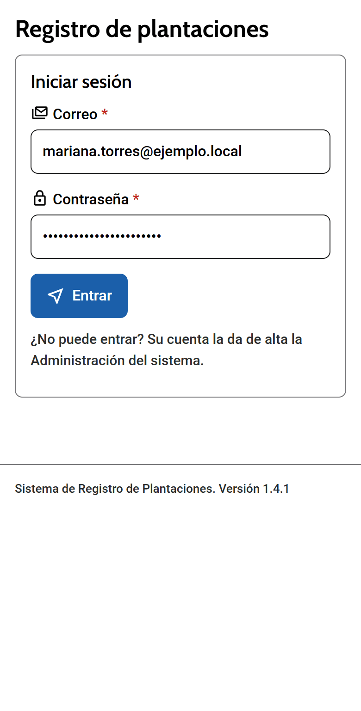
Abra en Chrome la dirección del sistema, o el ícono que dejó en la pantalla de inicio (sección 2). Escriba su correo y su contraseña, y toque «Entrar».
Al entrar, el teléfono baja las listas que usa para registrar (programas, especies) y trae lo registrado. La primera vez tarda unos segundos.
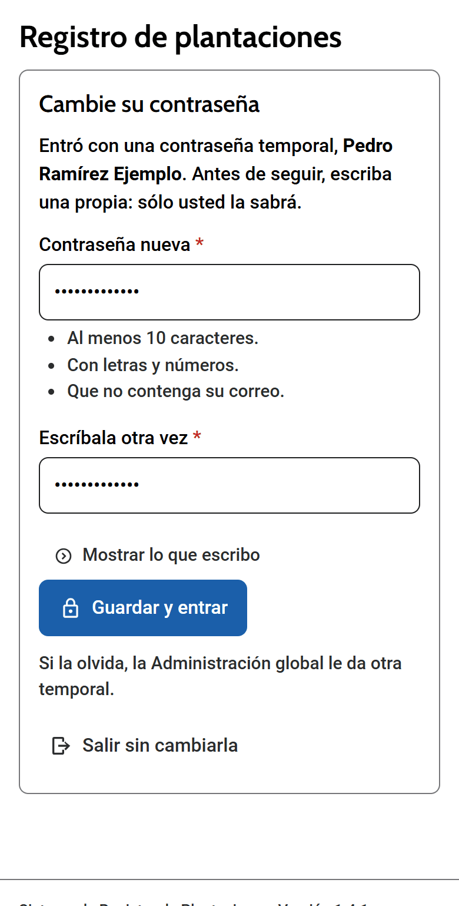
Con una cuenta nueva, o cuando la Administración le restablece la contraseña, usted entra con una contraseña temporal que le dan en persona o por teléfono. El sistema no deja hacer nada más hasta escribir una propia:
La temporal vence en 72 horas. Su contraseña es sólo suya: no la comparta ni la apunte en el teléfono.
La sesión sigue abierta mientras use la app, también sin señal. Si pasa mucho tiempo sin usarla, el sistema le pide la contraseña otra vez, sin perder lo capturado. Para salir, toque el botón de la persona, arriba a la derecha, y «Cerrar sesión».
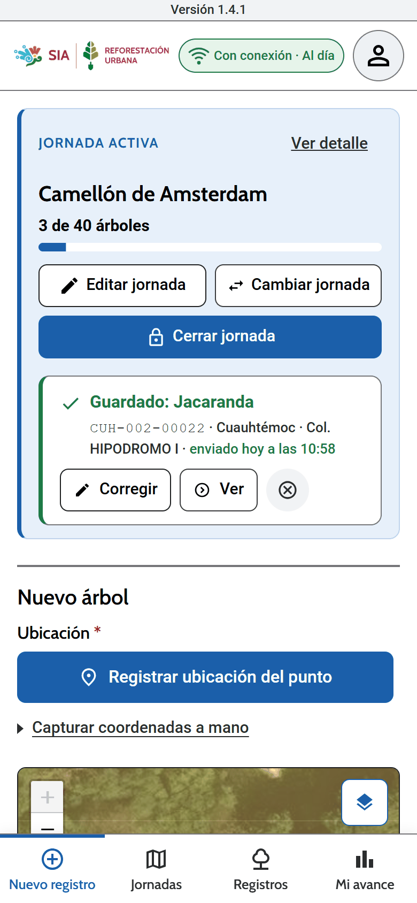
| Perfil | Pestañas |
|---|---|
| Cabo | Nuevo registro · Jornadas · Registros · Mi avance |
| Coordinación | Nuevo registro · Jornadas · Registros · Supervisión |
| Dirección | Supervisión · Jornadas · Registros |
En la computadora las pestañas van arriba. El cabo entra a Nuevo registro; la coordinación y la dirección, a Supervisión.
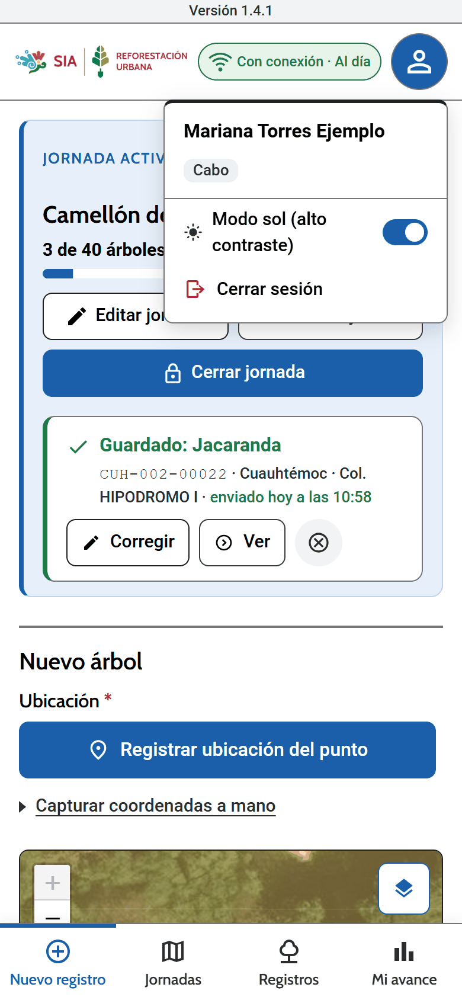
Al hacer algo, abajo de la pantalla aparece un aviso que dice qué pasó. Algunos ofrecen «Deshacer» unos segundos, por ejemplo al eliminar un árbol.
Las preguntas importantes, como cerrar una jornada, se abren en una ventana con dos botones: el que hace la acción y «Cancelar».
Si abre el sistema en dos pestañas del navegador, la de atrás se detiene y dice que el sistema se abrió en otra pestaña. Toque «Usar aquí» en la que quiere usar.
Cuando hay una versión nueva, el teléfono la baja solo al abrir la app con señal y cambia a ella. Lo capturado no se pierde.
La app funciona sin internet. El GPS, la captura, la fotografía y el reporte funcionan sin señal. Sólo la imagen del mapa deja de verse: puede tocar el mapa donde está el árbol o capturar la coordenada a mano.
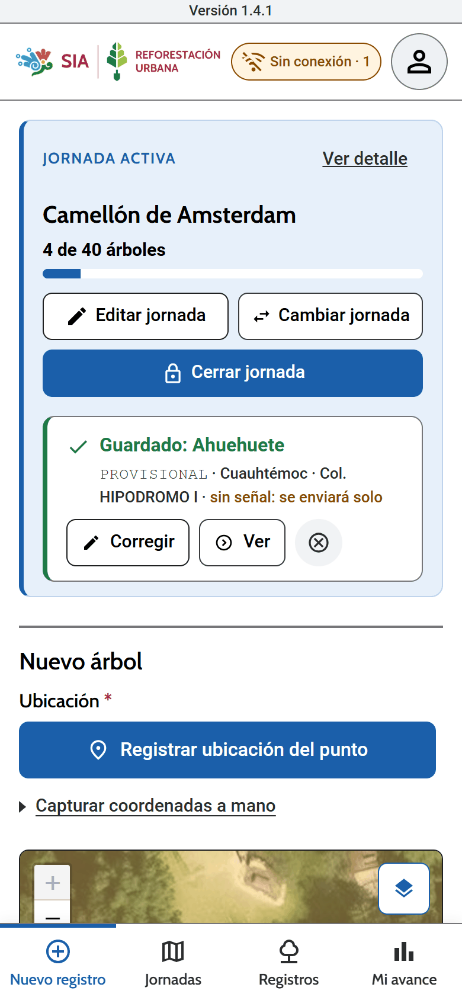
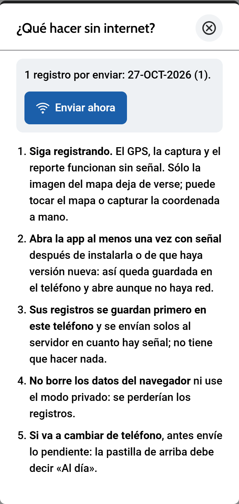
Al tocar la pastilla se abre esta guía. Dice cuántos registros esperan y de qué días, y trae «Enviar ahora» para mandarlos en cuanto encuentre señal o una red wifi.
Una jornada es una salida a plantar en un sitio. Antes de registrar árboles se declara la jornada, una vez, al llegar. Todos los árboles que registre después quedan en ella.
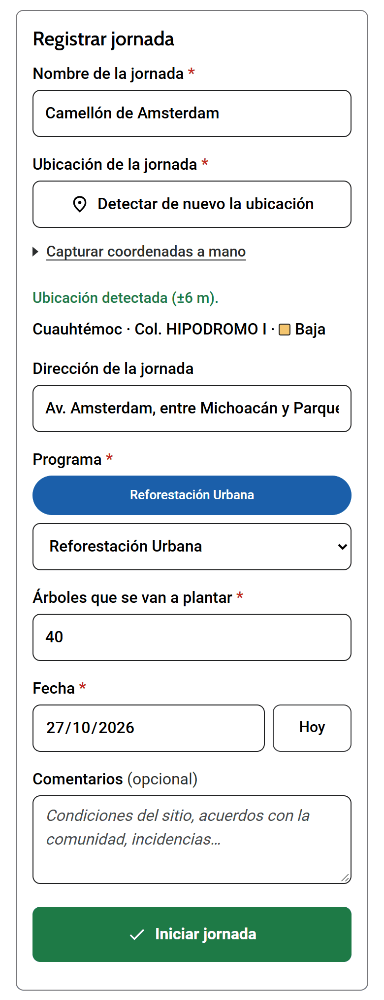
En la pestaña Nuevo registro, sin jornada activa, aparece «Registrar jornada»:
Si la jornada atiende la petición de otra instancia, elija el programa «Solicitud especial». Aparecen dos campos más: «Quién lo solicita», de la lista, y la «Descripción de la solicitud». Si la instancia no está en la lista, elija «Otra instancia» y escriba su nombre.
Al iniciarla, arriba de Nuevo registro queda la tarjeta de la jornada activa, con cuántos árboles lleva de los previstos y sus botones:
Con la jornada iniciada, cada árbol se registra en la pestaña Nuevo registro, parado junto a él.
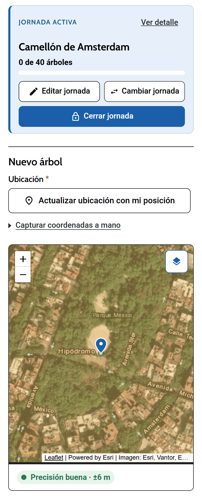
Si el punto no quedó en el árbol, arrastre el marcador o toque el sitio correcto en el mapa. Las coordenadas se actualizan solas.
Debajo del mapa la app dice la alcaldía, la colonia y las coordenadas. No se escriben: salen del punto.
El color de fondo del mapa es la prioridad para reforestar de la colonia de la jornada, del crema (muy baja) al rojo oscuro (muy alta). El botón de capas, arriba a la derecha del mapa, cambia entre «Satélite» y «Calles», y deja ocultar ese color o hacerlo más claro.
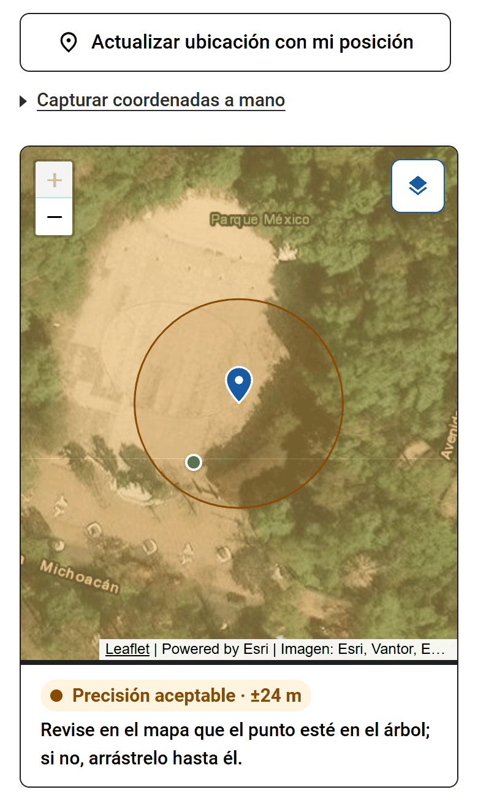
La franja dice qué hacer. En , revise en la imagen que el punto esté en el árbol; si no, arrástrelo hasta él. En rojo, espere unos segundos al aire libre y toque «Actualizar ubicación con mi posición», o arrastre el punto.
Una precisión baja no impide guardar: al guardar, la app le pide revisar el punto antes.
En el mapa, los puntos verdes son los árboles ya registrados en esta jornada: sirven para no registrar dos veces el mismo. Al tocar uno, la app dice cuál es y deja verlo.
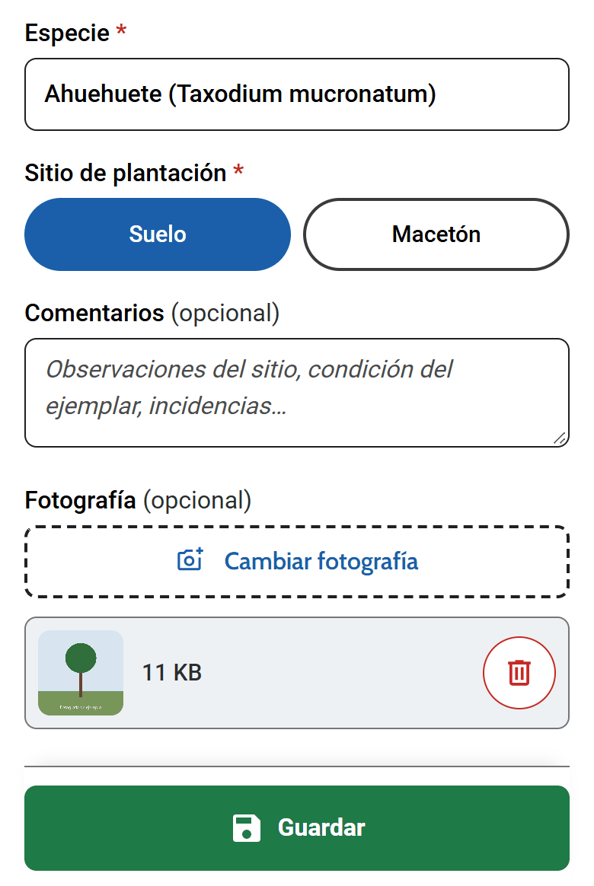
Si la jornada empezó otro día, aparece también la fecha de plantación: «Hoy» la pone sola.
Toque «Guardar». Si todo está bien, el árbol se guarda de una vez.
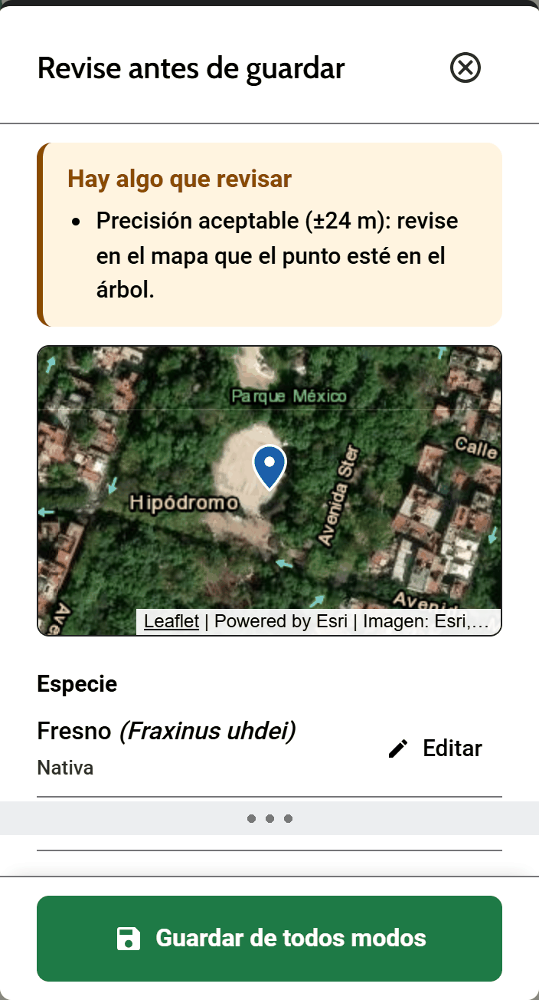
Si hay algo que mirar, antes de guardar se abre la ficha del árbol con el aviso arriba. Puede ser:
La especie, el sitio, las coordenadas y la fotografía tienen su «Editar» para corregirlos ahí mismo. Si todo está bien, toque «Guardar de todos modos»; si no, cierre la ficha con la ✕ y corrija.
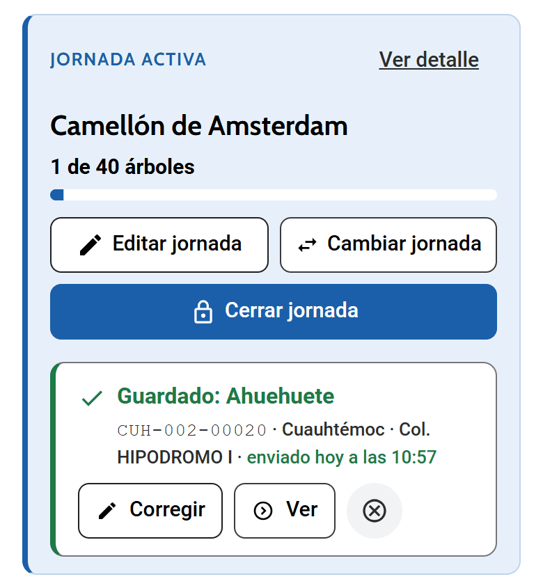
La tarjeta de la jornada suma el árbol y dice «Guardado:» con la especie. Cuando llega al servidor, aparecen su folio, la alcaldía, la colonia y «enviado hoy a las…».
Sin señal dice «sin señal: se enviará solo» (sección 5). Puede seguir registrando.
El formulario queda limpio para el siguiente árbol. Si la app se cierra con un árbol a medio capturar, se guarda como borrador y vuelve al abrirla.
La calle de cada árbol, y entre qué calles va, la pone el servidor al recibirlo. Se ve en su ficha y en el reporte.
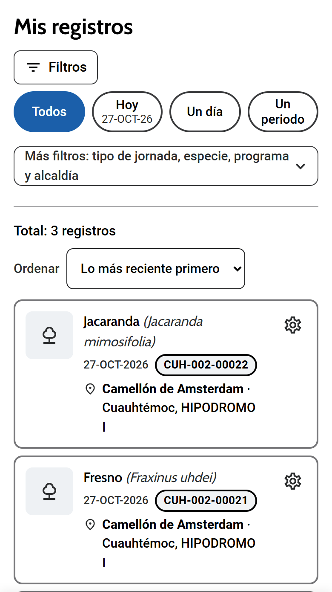
La pestaña Registros lista los árboles, de lo más reciente a lo más antiguo. El cabo ve «Mis registros»; la coordinación, «Registros de mi institución».
Cada tarjeta dice la especie, la fecha, el folio y la jornada con su alcaldía y colonia. Al tocarla se abre el detalle.
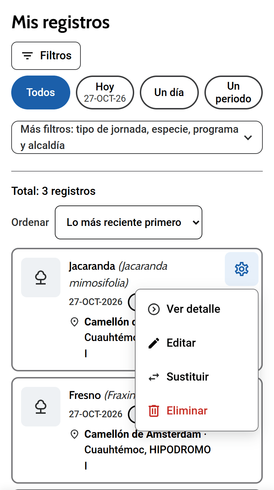
Toque la tuerca de la tarjeta:
Lo mismo se hace desde la ficha de su jornada, en Jornadas: cada punto tiene su tuerca, que además deja moverlo a otra jornada si se registró en la equivocada.
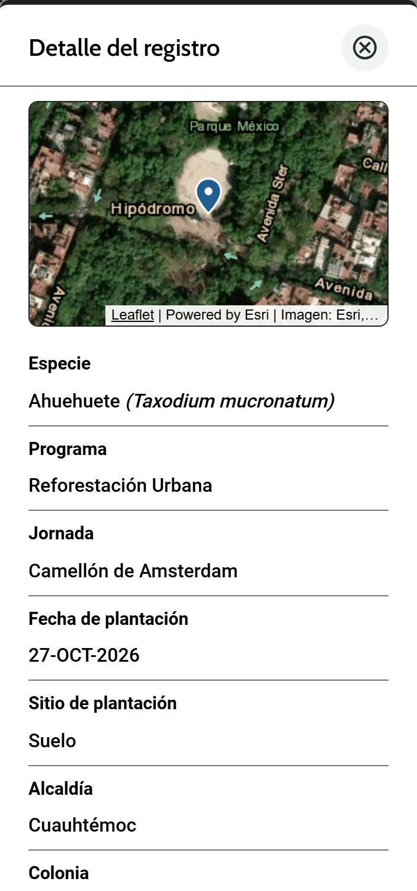
El detalle trae el punto en el mapa y cada dato del árbol: especie, programa, jornada, fecha, sitio, alcaldía, colonia, la calle que puso el servidor, cómo se obtuvo el punto, la fotografía, el folio y quién lo registró.
Al final está su historial: quién lo registró, quién lo cambió, qué cambió y cuándo. Nadie lo puede modificar.
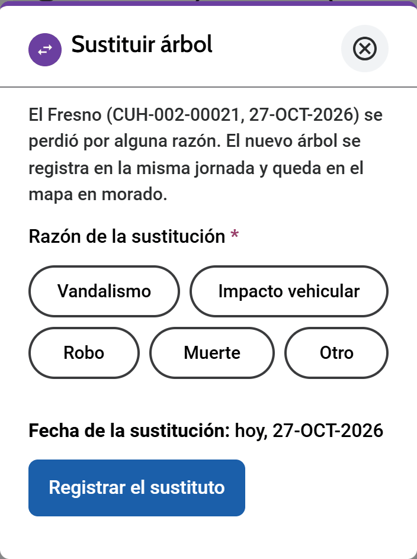
Si un árbol se perdió y se planta otro en su lugar, no lo elimine: sustitúyalo. Así queda constancia de la pérdida y de su motivo.
El sustituto queda en la misma jornada que el perdido y se ve en el mapa en morado. Si esa jornada ya estaba cerrada, la app pregunta antes de reabrirla, y la vuelve a cerrar al guardar el sustituto.
Al terminar de plantar, se cierra la jornada y se genera su reporte, el parte de la jornada en PDF. Son cuatro pasos, que la ficha de la jornada marca arriba: Registrar, Cerrar, Revisar y Reporte.
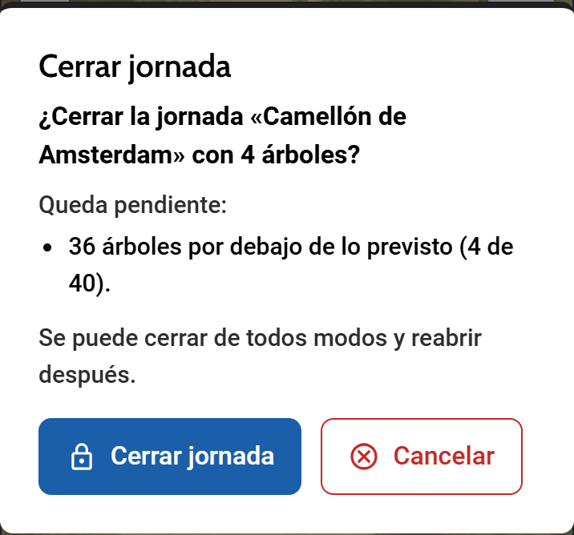
Toque «Cerrar jornada» en la tarjeta de la jornada activa o en su ficha. La app pregunta y dice lo que queda pendiente, por ejemplo árboles por debajo de lo previsto o puntos por revisar. Avisa, no impide: se puede cerrar de todos modos y reabrir después.
Si hay puntos por revisar, ofrece revisarlos primero, uno tras otro.
Lo que se cuenta en Mi avance y en Supervisión son las jornadas cerradas. Ciérrela el mismo día, aunque falten árboles.
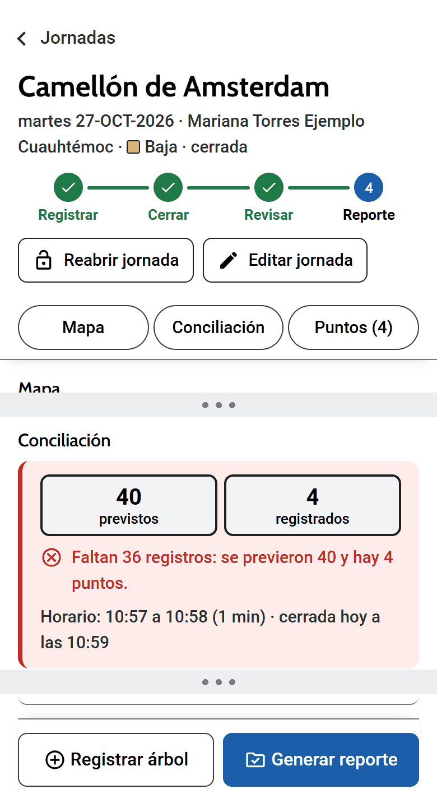
En la pestaña Jornadas, toque la jornada para abrir su ficha:
Los puntos con aviso (posible duplicado, lejos del resto o precisión baja) se revisan en el mapa. Si están bien, se marcan como revisados uno por uno, o todos con «Marcar todos como revisados». Si no, se corrigen con su tuerca.
«Reabrir jornada» la vuelve a abrir para registrar más árboles; «Editar jornada» corrige sus datos.
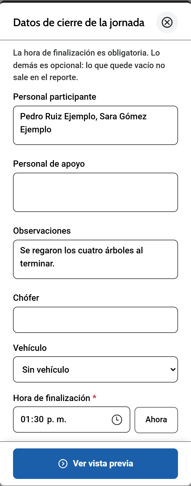
Con la jornada cerrada, toque «Generar reporte» en su ficha. Primero se piden los datos de cierre:
Lo que quede vacío no sale en el reporte. El personal, el chófer y el vehículo sólo los captura la Secretaría; en otras instituciones se piden las observaciones y la hora.
Toque «Ver vista previa».
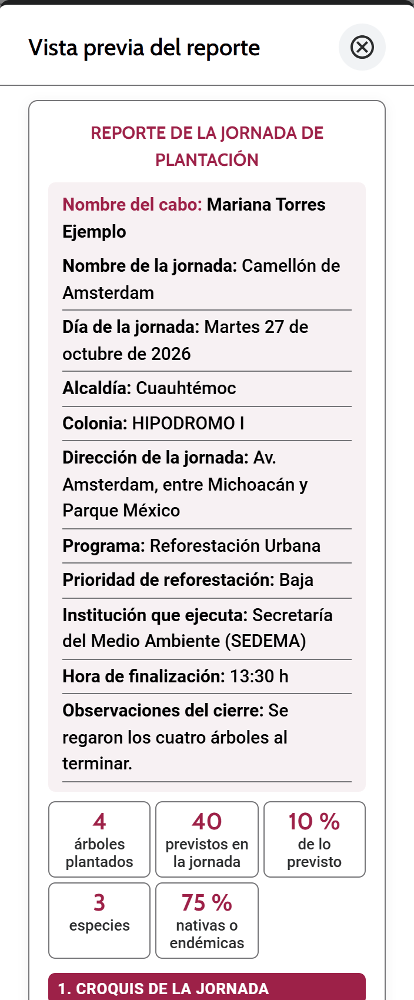
La vista previa enseña el reporte tal como saldrá:
«Corregir datos» regresa a los datos de cierre. «Generar PDF» baja el reporte al teléfono, con su nombre y la fecha en el nombre del archivo.
Al terminar, la ficha dice «Todo listo: reporte generado…». Los datos de cierre quedan guardados: si lo vuelve a generar, no hay que escribirlos otra vez.
Una jornada puede seguir abierta los días que haga falta. Al día siguiente, en Nuevo registro, la app la ofrece y pregunta antes de guardar en una jornada que no es de hoy. Cada árbol lleva la fecha en que se plantó; «Hoy» la pone sola.
Si tiene varias jornadas abiertas, «Cambiar jornada» pasa de una a otra.
Si usted no puede seguir con una jornada abierta, su coordinación puede pasarla a otro cabo (sección 14):
Cuando la coordinación la devuelve, el titular lee al entrar que volvió a él.
En los eventos grandes, la coordinación abre una jornada compartida y marca a los cabos que registran en ella (sección 13).
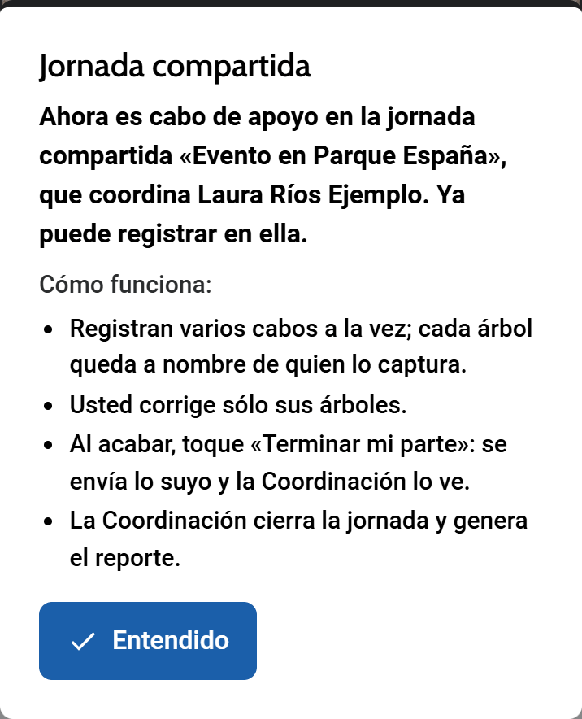
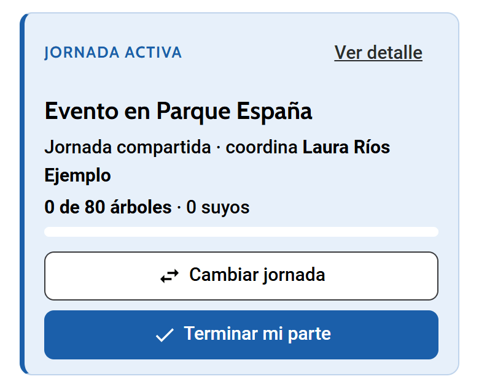
La tarjeta de la jornada dice «Jornada compartida · coordina…» y cuántos árboles van en total y cuántos son suyos.
Cuando termine de plantar, toque «Terminar mi parte» y confírmelo:
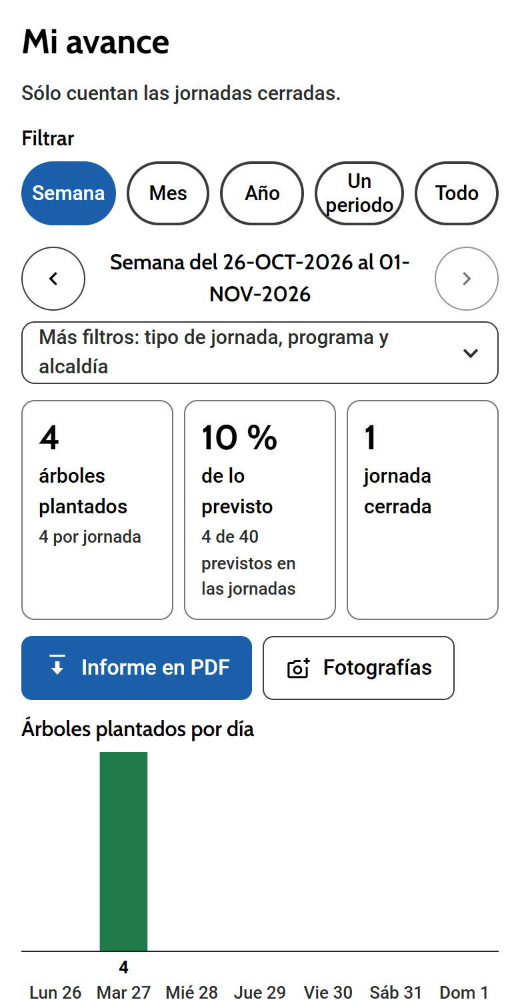
La pestaña Mi avance dice cuánto ha plantado usted. Sólo cuentan las jornadas cerradas: una jornada abierta se suma al cerrarla.
«Informe en PDF» baja el informe del periodo, con su nombre.
«Fotografías», junto a «Informe en PDF», abre las fotografías de sus árboles, con los mismos filtros y un buscador. Al tocar una se ve grande con sus datos. «Descargar todas» baja las que se ven, en un solo archivo ZIP.
La coordinación hace todo lo del cabo (secciones 6 a 11) y, además, trabaja con todos los cabos de su institución:
Al entrar, la coordinación llega a Supervisión. Registra en Nuevo registro igual que un cabo: sus árboles quedan a su nombre.
En el reporte de una jornada, la coordinación elige al encargado entre los cabos que registraron ese día; para un cabo, el encargado es él mismo.
En un evento masivo, varios cabos registran a la vez en una misma jornada, cada uno desde su teléfono. La abre la coordinación, el mismo día del evento, y queda como su titular.
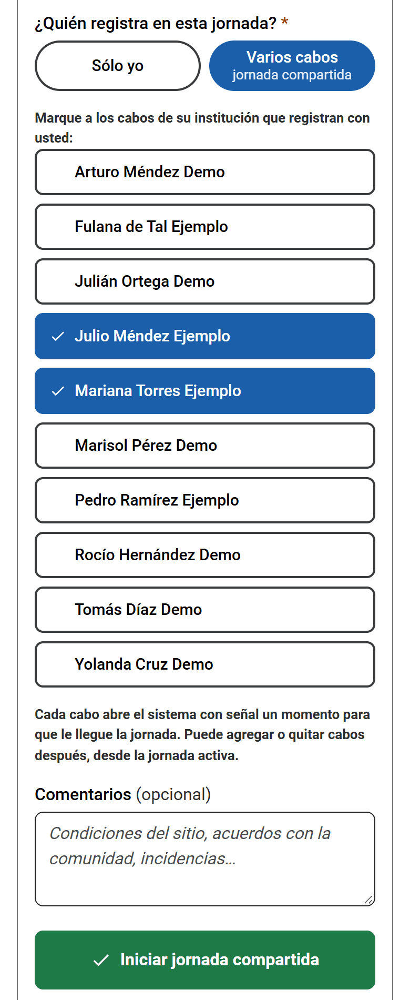
Cada cabo abre el sistema con señal un momento para que le llegue la jornada. Hágalo en el punto de reunión, antes de empezar a plantar.
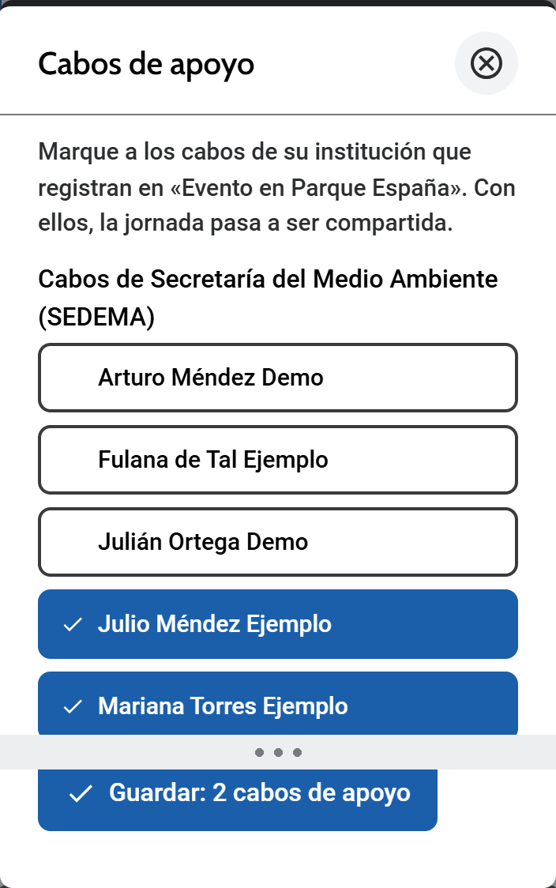
En la tarjeta de la jornada activa, o en su ficha, toque «Cabos de apoyo». Marque o desmarque y toque «Guardar». Con la misma ventana se convierte en compartida una jornada que usted inició con «Sólo yo».
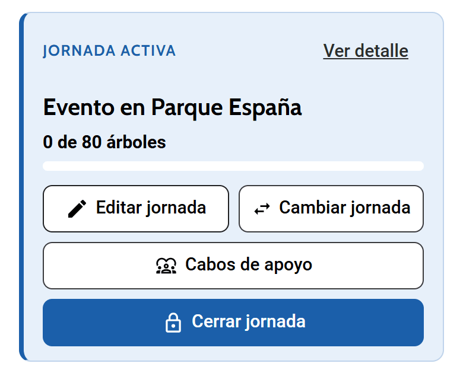
Si algún cabo de apoyo no ha tocado «Terminar mi parte», al cerrar la app lo dice como un pendiente más, con cuántos árboles suyos llegaron y a qué hora el último. Avisa, no impide. Con señal, la jornada se pone al día con el servidor antes de cerrar.
El reporte de una jornada compartida dice quién la coordina, los cabos de apoyo con los árboles de cada uno, y trae la columna «Cabo» en la tabla de ejemplares.
Para encontrarlas después, «Más filtros» trae «Tipo de jornada» en Registros, Jornadas y Supervisión. En Jornadas, la tarjeta dice «compartida con N cabos».
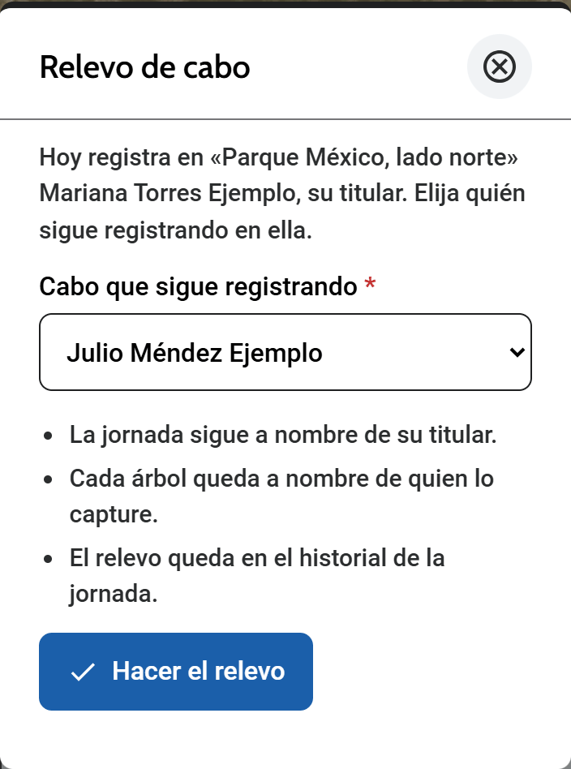
Si un cabo no puede seguir con una jornada abierta (se enfermó, lo cambiaron de sitio), otro cabo de la institución puede seguir registrando en ella.
Para devolverla, haga otro relevo y elija al titular: aparece primero en la lista.
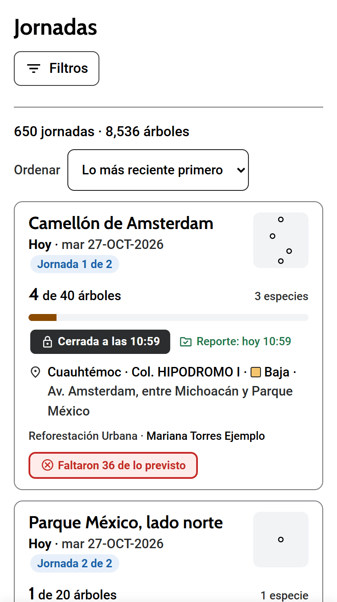
La pestaña Jornadas lista las jornadas de la institución. Cada tarjeta dice:
«Filtros» deja buscar por fecha, por reporte generado o no, y por lo de «Más filtros»: quién registró, tipo de jornada, programa y alcaldía.
Supervisión las reúne en «Qué atender» (sección 16). Un árbol se corrige igual que el propio (sección 8). Cada cambio queda en el historial del árbol con quién lo hizo.
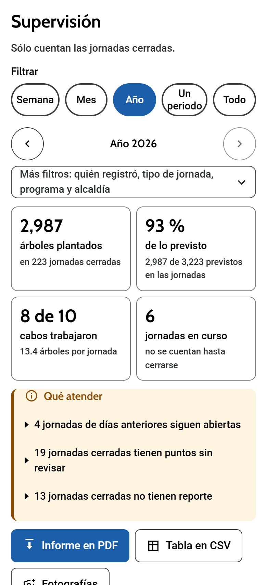
Supervisión dice cuánto se ha plantado en la institución. Como Mi avance, sólo cuenta las jornadas cerradas.
Debajo de la gráfica, cada desglose va plegado con su dato principal; al tocarlo se abre:
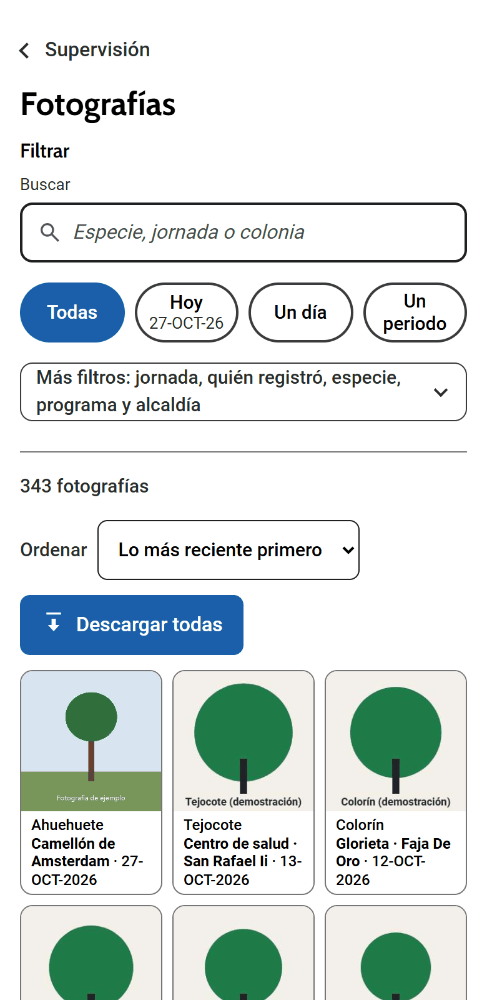
«Fotografías» reúne las fotografías de los árboles de la institución, de lo más reciente a lo más antiguo:
La fotografía es opcional: no todos los árboles la tienen.
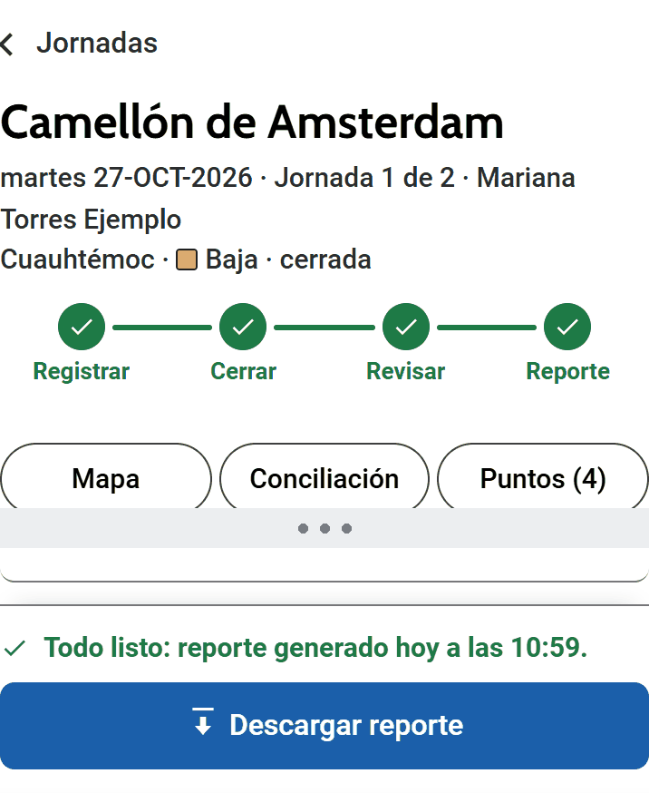
La dirección (subdirecciones, direcciones de área y direcciones generales) sólo consulta: no registra ni modifica nada. En la Secretaría ve toda la Ciudad, con todas las instituciones; en otra institución, sólo la suya.
Tiene tres pestañas:
El reporte de una jornada lo genera quien la registró o su coordinación. Cuando ya está generado, la ficha de la jornada dice «Todo listo: reporte generado…» y trae «Descargar reporte». Si todavía no lo tiene, Supervisión lo cuenta en «Qué atender».
| Si… | Qué hacer |
|---|---|
| El punto sale ámbar o rojo | Revise los ajustes del teléfono y despierte el GPS a cielo abierto (sección 2). Arrastre el punto hasta el árbol si hace falta. |
| No hay señal | Siga registrando: todo se guarda en el teléfono y se envía solo (sección 5). No borre los datos del navegador. |
| La pastilla dice que hay registros por enviar y ya hay señal | Tóquela y use «Enviar ahora». |
| Una franja dice «El servidor no aceptó…» | Toque «Revisar» y decida qué hacer con cada cambio. Si no sabe, pregunte a su coordinación. |
| Registró un árbol en la jornada equivocada | En Jornadas, abra la jornada, y en la tuerca del punto, muévalo a la correcta. |
| Registró un árbol dos veces | Elimine uno en Registros. El aviso ofrece «Deshacer» unos segundos. |
| Un árbol plantado se perdió y se plantó otro | Sustitúyalo, no lo elimine (sección 8). |
| La especie no está en la lista | Elija «Otra especie» y escriba su nombre. Avise a su coordinación para que la pidan al catálogo. |
| Inició una jornada por error | Si no tiene ningún árbol, ábrala en Jornadas y toque «Eliminar jornada». |
| Cerró la jornada y faltaban árboles | En su ficha, «Reabrir jornada», registre los que faltan y vuelva a cerrarla. |
| No puede seguir con una jornada abierta | Avise a su coordinación para que haga el relevo (sección 14). |
| No le llegó la jornada compartida | Abra la app con señal un momento. Si no aparece, pida a la coordinación que revise que usted esté marcado en «Cabos de apoyo». |
| Olvidó su contraseña o se bloqueó su cuenta | Pida a la Administración global una contraseña temporal nueva. |
| Dice que el sistema se abrió en otra pestaña | Toque «Usar aquí» en la pestaña que quiere usar. |
| Va a cambiar de teléfono | Antes, envíe todo: la pastilla debe decir «Al día». En el teléfono nuevo, deje los ajustes de la sección 2. |
| Algo no funciona o un mensaje pide avisar | Avise a su coordinación con la versión del sistema, lo que aparece en la pantalla y, si es del GPS, la marca y el modelo del teléfono. |